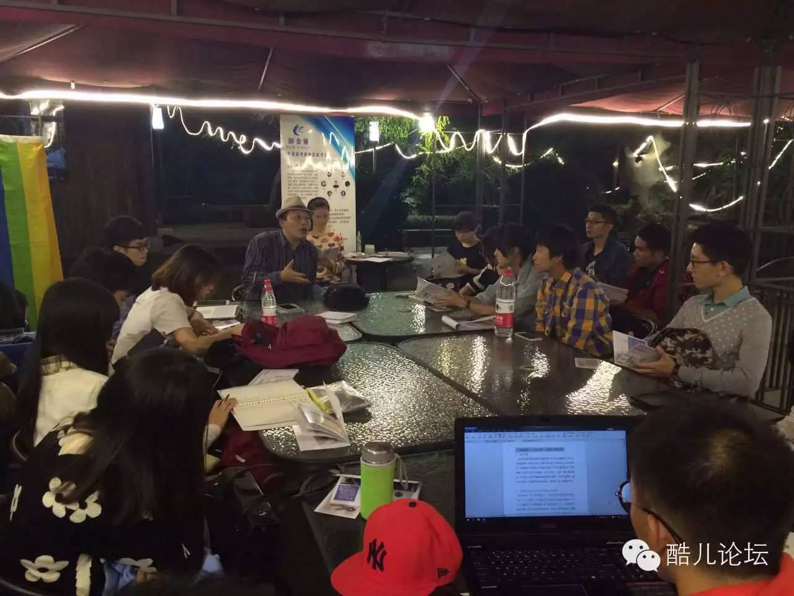
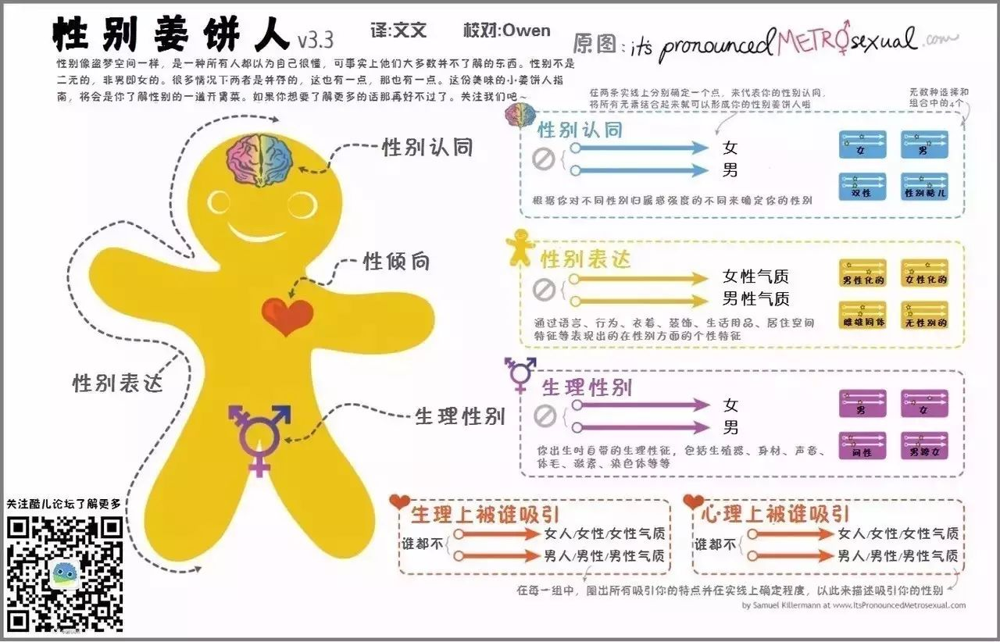

酷儿论坛究竟是一个什么样的组织？

论坛存在的全部意义，绝非一个概念层面的答案所能涵盖。论坛是一个在倡导平等多元健康的旗帜下奋力谋求自我认同与社会认同的自由之野，也是无数在杭性少数人群所真实经历的岁月中的温柔一瞥。
今年八月，我们在知乎上发起“加入酷儿论坛是一种怎样的体验”这一讨论，有的答案铿锵有力，让人动容，有的娓娓道来，触及人心。在此，我们攫取了其中一些答案，共同重温论坛带给我们的无法替代的温情。

一只文文：
回答这个问题，算是对过去一年的志愿者工作的整理总结，更重要的是希望能有更多的人来加入我们一起为性别平等努力。
酷儿论坛的愿景是：为杭州的学生性少数人群提供一个平等、多元、健康的环境，促进自我认同与社会认可。
和酷儿论坛的第一次相遇应该是在刚进大学军训的时候，看到贴在食堂边上的自动贩卖机上的海报。（这是后来才知道的，因为当时太过羞涩都不敢走近去看海报上的小字233）
第一次听说酷儿论坛是初恋告诉我的，也是这个时候才知道原来学校里的海报是他们贴的。当时的第一印象就是这些人很会搞事。
和初恋还在一起的时候在社团勇敢的出柜了，然后同部门的学长在聚餐结束后就偷偷戳我并且把我拉进了论坛下面的一个交友群，就此我才真正进入了浙大的圈子（然后没过多久就和初恋分手了233）。当时的杭州同志中心还在紫金港附近，偶尔周末会过去玩玩桌游、开开茶话会什么的。
第一次参加论坛的大型集体活动是2014-2015年的新年趴。（圈出来的是我2333）
第一次参加论坛的发声倡导活动是2015年在浙大紫金港北街的涂鸦。（天下来同的字样至今仍保存着~欢迎前往围观）
加入论坛的时间是2015年9月，一开始要我加入其实我是拒绝的，因为我是一个不能同时做两件事的人，光是学校的社团就已经占用了我很多时间了（我好菜啊），所以学长和我提起这件事的时候我非常抗拒。但是同时（当时的）我又是一个不知道如何拒绝别人的人，再加上学长的死缠烂打，一番纠结下还是去面试了。
那天正好时社团纳新面试的最后一天，我刚面试完别人就赶去面试的感觉也是很奇妙233而且面试我的人都算是比较熟悉的了，走程序的问了几个问题然后聊了一会儿天就算结束了，然后我就正式成为酷儿论坛的一名普通志愿者啦。
刚进入论坛我负责的是翻译的工作（因为这个最轻松（不。自己去外网上找一些性/别方面的文章，自己翻译之后在（当时还没关闭的）论坛和微信微博等平台上发布。
同声传译|1987年我可以作证A man child was born←这是我翻译的一篇跨性别者的自述
虽然是媒体组的一员，但是每当论坛有活动需要人手的时候，只要我有空是一定会去帮忙的。毕竟自己只做了一些微小的工作，心里会有一些惭愧，能够多帮一点是一点。
第一次作为工作人员出现在活动现场是彭晓辉教授的沙龙，帮忙去中心搬了一些凳子，并且全程录音在结束后听写下了分享会的内容。

世界艾滋病日的时候，要拍摄一个采访浙大学生的视频，帮忙去在路边捕捉学生并采访。（虽然后来由于不可抗力因素所有我的采访片断均都未被剪入最终的视频，但是微信的推文还是采用了我的采访心得，令人感动）
同一系列的还有一个流逝的讲座，最后也是留了下来与流逝进行了一些交流（虽然我一句话都没说），还和流逝共进了晚餐。
接下来就是我在论坛干的最重要的事情了——新年微电影的拍摄。作为男零号出演酷儿论坛2016新年微电影《同根》（虽然演技为零）。讲述了一个男同性恋打算和直女结婚，被男友发现，最后被两人抛弃孤独终老的故事，直面社会上的同妻现象并引发人们的思考。同时我也是微电影的字幕君，在新年趴的前一晚通宵制作了字幕（哭）
寒假的时候我终于想起来我是一个媒体组的人，于是写了一篇Les音乐推荐。
下学期做的事情主要是两次讲座——吴幼坚“爱是最美的彩虹”讲座和中国同性婚姻登记第一案孙文麟杭州分享会。孙文麟那次还和他们一起吃了午饭并且担任了分享会主持人。（主持技能也为零）

吴幼坚讲座中间还有一个插曲。因为报名表上性别认同一栏而闹出了一些笑话，于是接下了写科普文的任务，期间完成了性别姜饼人v3.3的翻译（又做回老本行）。

最近的事情就是八月代表论坛去广州参加了同城的教师撑同志的培训，并且会在接下来的一个多月内负责这个项目。
以上就是我目前在酷儿论坛的主要经历。
那么最后，9月份我们就要开始新一轮的纳新啦，欢迎有兴趣的小伙伴加入我们来一起搞事。

Alex Wu：
这是我大学生活最精彩的一段，阳光灿烂的日子。

notcat：
简单一句话吧。
找到了男朋友。

论坛的价值发诸人群，也必将回归人群，在个体的情感记忆中共眠共息是论坛持续存在14年的最大依凭，也是我们一直坚守的态度与信念。
纳新工作即将正式开启，欢迎有意愿加入论坛的热心小伙伴们进群了解具体情况。